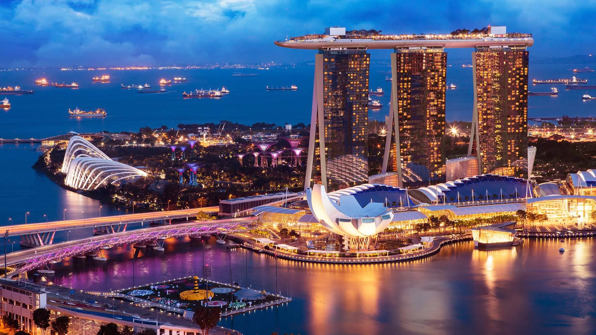
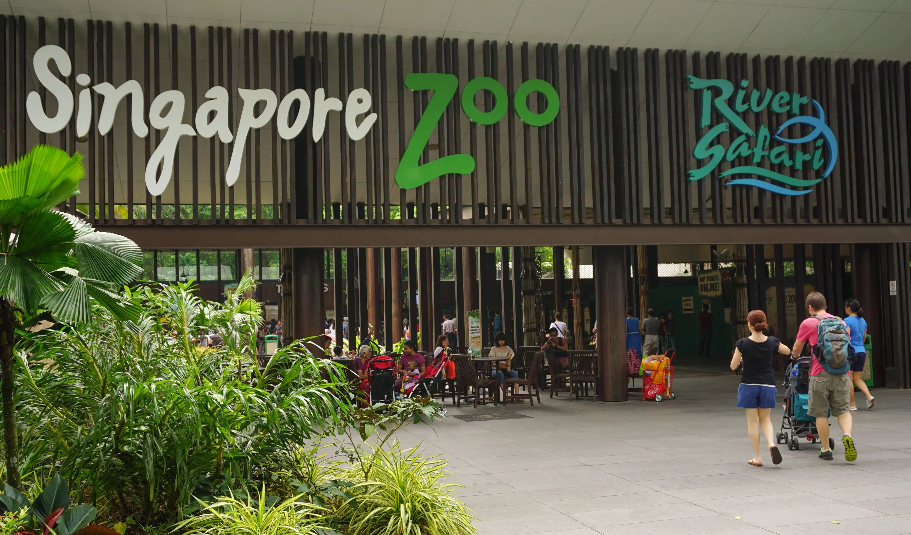

Activities to do in Singapore
As a country known for being very well developed and where it makes most of its money from tourism, you can expect to find a lot of things to do and places to visit. As mentioned in this page, there are a number of buildings or other structures that many tourists or even locals will look at in awe of the building's beauty. While there are a lot of huge buildings in Singapore, it's not a completely concrete jungle. There are other activities available outdoors such as going to zoos, parks, beautiful beaches, etc. Here are some places I personally would recommend:
Gardens by the Bay

Gardens by the Bay, a national garden attraction in Singapore, made to showcase a wide variety of plants from around the globe through horticulture and garden artistry. It allows visitors to have an engaging, educational experience, featuring plant species from cool, temperate climates to tropical habitats, which many are uncommon in this part of the world.
Here is some history regarding the Garden:
- In January 2006, an international master plan design competition had started to look for top-tier design concepts for Gardens by the Bay. It brought in more than 70 entries submitted by 170 firms from over 24 countries. The winners were Grant Associates for Bay South and Gustafson Porter for Bay East, both from the UK.
- The Gardens began construction in November 2007. Bay East Garden was later developed and opened in October 2011.
Their socials:
Universal Studios Singapore

Have you ever watched a movie created by Universal Studios and thought to yourself: "I wonder what it would be like to experience what these characters are experiencing?" Well, Singapore has a park themed about exactly that! The park is separated into 6 different themes which are:

Hollywood

New York
Marina Bay Sands

Marina Bay Sands is a large, mixed-use resort complex that includes a convention center, hotel, shopping mall, museum of art and science, theatres, dining options, and more. Located across from Singapore's Central Business District, it is a prominent landmark in the city.
Singapore Zoo

The Singapore Zoo is renowned for its open-air habitats that allow animals to roam freely in spacious enclosures. The zoo staff are dedicated to providing a high-quality experience for visitors, and the animals are well cared for.
Animals you will encounter:

Cheetah